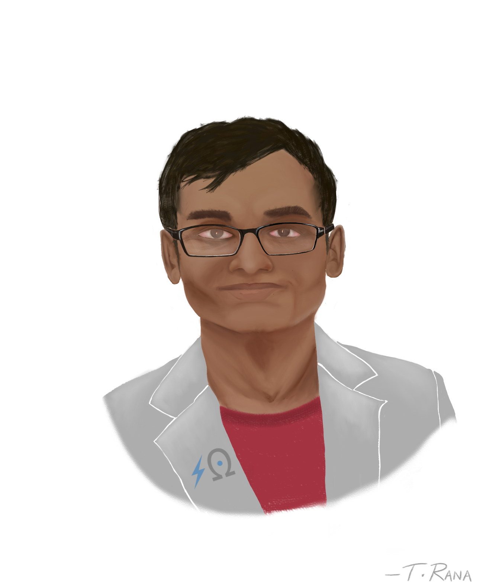

{% include base_path %}

My potrait by Dr. Tathagoto Rana </br>


<h2>Best of my clicks</h2>


<h2>Family and Friends</h2>


<h2>Conferences</h2>


<h2>Fun at Work</h2>


<h2>Musical Performances and Poetry Recitations</h2>

More on my <a href="https://www.youtube.com/c/SOHOMGHOSH79/" target="_blank">Youtube channel</a>
  
<h2>Treks, Adventure Sports, Trips and Workouts</h2>


<h2>College and School Life</h2>


